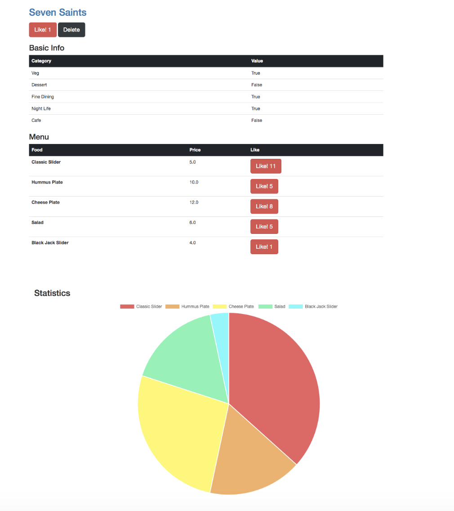
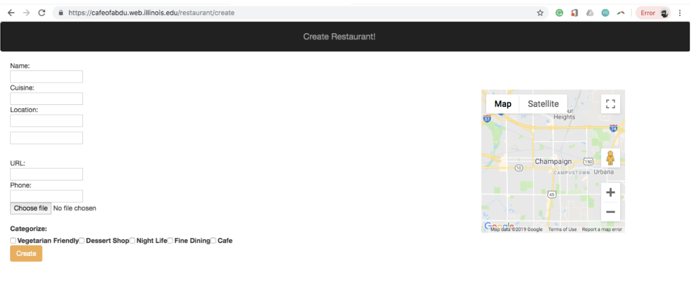

Foodease
Project Info:
Team Size: 4 team members (Engineering students)
My roles and responsibilities:
- Building the backend
- Implementing the recommendation engine
- Rendering the restaurant view on the frontend
Technologies/Tools used: Javascript Django SQL EJS
Project Timeline: January 2019 - May 2019
Live website: http://cafeofabdu.web.illinois.edu/
The goal of our project was to create a web application called "FoodEase" that allows the user to make an informed decision on the restaurants they want to go to as well as the dishes they want to order. Furthermore, we also built an in-app map feature to allow users to visualize the distance to a particular restaurant without having to open up their preferred map appplication, which enabled a more optimized and convenient app experience. We build up a collection of restaurant entries via crowdsourcing. The image below shows the functionality to add a restaurant entry to the website:
The geolocation map feature that we incorporated into our application utilised Google Maps API.
The recommendation algorithm that was implemented utilised clustering, bagging and cosine similarity between restaurant and user embeddings.
Learnings:
The two primary learnings from this project involved: making use of the Google Maps API and implementing a recommendation engine as a layer on top of a web application.